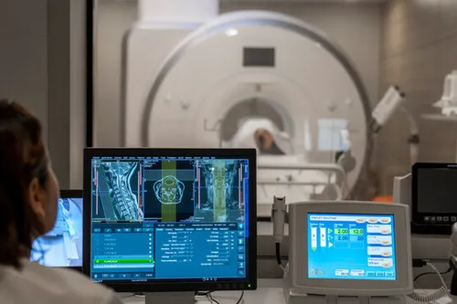

Qualscan is a leading medical diagnostic and radiology services group — providing diagnostic imaging, teleradiology, reporting services and radiology solutions for hospitals and healthcare facilities.
A team of accomplished radiologists delivering accurate, sub-specialty interpretations to hospitals and healthcare facilities across four continents — built on quality, speed and lasting partnerships.

From a single mission in 1999 to servicing healthcare facilities across four continents today.
Qualscan starts providing services to super-specialty hospitals and medical college hospitals.
Established multiple standalone diagnostic facilities across India.
Started teleradiology services and expanded operations across India, Africa and the Middle East.
Began U.S. operations with one client hospital in Florida.
Servicing healthcare facilities across Florida, New Jersey, Texas and Indiana.
A commitment to excellence in reporting and service.
An experienced and specialized reporting team.
A clear and straightforward pricing structure.
Focus on lasting client relationships and service quality.
Discover how our people, process and technology come together to support your facility.
Talk to our team →